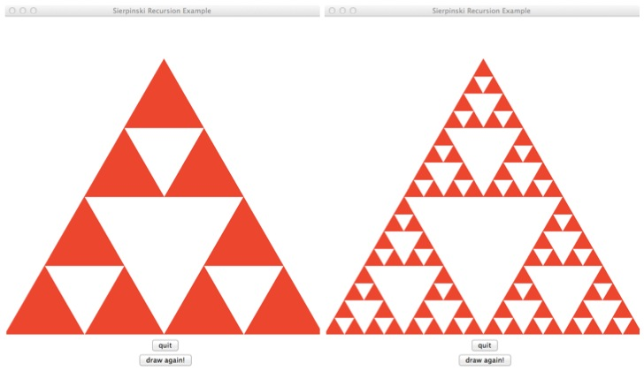

Lecture 23 — Recursion¶
Overview¶
- When a function calls itself, it is known as a recursive function.
- Use of the function call stack allows Python to handle recursive functions correctly.
- Examples include factorial, Fibonacci, greatest common divisor, flattening a list of lists, and mergesort.
- We’ll think about how to hand-simulate a recursive function as well as rules for writing recursive functions.
Our First Example¶
Consider the following Python function.
def blast(n): if n > 0: print(n) blast(n-1) else: print("Blast off!")
What is the the output from the call?
blast(5)
Python’s Call Stack Mechanism¶
The following mechanism helps us understand what is happening:
- Each time the code makes a function call, Python puts information on
the “call stack”, including
- All values of parameters and local variables
- The location in the code where the function call is being made.
- Python then makes the function call, switching execution to the start of the called function.
- This function in turn can make additional (potentially recursive) function calls, adding information to the top of the stack each time.
- When a function ends, Python looks at the top of the stack, and
- restores the values of the local variables and parameters of the most recent calling function,
- removes this information from the top of the stack,
- inserts the returned value of the called function (if any) in the appropriate location of the calling function’s code, and
- continues execution from the location where the call was made.
Practice Problems to Illustrate This¶
What are the outputs of the following?
def rp1( L, i ):
if i < len(L):
print(L[i], end=' ')
rp1( L, i+1 )
else:
print()
def rp2( L, i ):
if i < len(L):
rp2( L, i+1 )
print(L[i], end=' ')
else:
print()
L = [ 2, 3, 5, 7, 11 ]
rp1(L,0)
rp2(L,0)
Note that the entirety of list L is not copied to the top of the
stack. Instead, a reference (an alias) to L is placed on the stack.
Factorial¶
The factorial function is
\[n! = n (n-1) (n-2) \cdots 1\]and
\[0! = 1\]This is an imprecise definition because the … is not formally defined.
Writing this recursively helps to clear it up:
\[n! = n \cdot (n-1)!\]and
\[0! = 1\]The factorial is now defined in terms of itself, but on a smaller number!
Note how this definition now has a recursive part and a non-recursive part:
- The non-recursive part is called the base case. There must be at least one base case in every recursive function definition.
Exploring Factorial¶
We will:
- Write a recursive Python function to implement \(n!\).
- Hand-simulate the call stack for \(n=4\).
We’ll add output code to the implementation to help visualize the recursive calls in a different way.
Guidelines for Writing Recursive Functions¶
- Define the problem you are trying to solve in terms of smaller /
simpler instances of the problem. This includes
- What needs to happen before making a recursive call?
- What recursive call(s) must be made?
- What needs to happen to combine or generate results after the recursive call (or calls) ends?
- Define the base case or cases.
- Make sure the code is proceeding toward the base case in every step.
Fibonacci¶
The Fibonacci sequence starts with the values 0 and 1.
Each new value in the sequence is obtained by adding the two previous values, producing
\[0, 1, 1, 2, 3, 5, 8, 13, 21, 34, 55, \ldots\]Recursively, the \(n^\text{th}\) value, \(f_n\), of the sequence is defined as
\[f_n = f_{n-1} + f_{n-2}\]This leads naturally to a recursive function…
Dangers of Recursion¶
- Some recursive function implementations contain wasteful repeated computation.
- Recursive function calls — like any function calls — typically involve hidden overhead costs.
- Often, therefore, a recursive function can (and should) be replaced with a non-recursive, iterative function that is significantly more efficient.
- This is easy to do for both Factorial and Fibonacci, as we will see in class.
Why, Then, Do We Study Recursion?¶
- Many of our definitions and even, our logical structures (such as lists), are formalized using recursion.
- Sometimes recursive functions are the first ones we come up with and
the easiest to write (at least after you are comfortable with
recursion).
- Only later do we write non-recursive versions.
- Sometimes on harder problems it is difficult to even write non-recursive functions! The list flattening problem below is one such example.
Advanced Examples¶
We’ll spend the rest of class on three more advanced examples:
- Recursive geometric shapes: the Sierpinski triangle
- Flattening a nested list
- A recursive version of merge sort
Recursive Geometric Shapes¶
Fractals are often defined using recursion. How do we draw a Sierpinski triangle like the one shown below?
We will look at this example in class and attempt to define the recursion.
To aid us, we’ll look at a Tkinter Python program that implements the drawing of the Sierpinski triangle.
Flattening a Nested List¶
Suppose we want to take a list such as
v = [[1,5], 6, [[2]], [3, [7, 8, [9,10], [11,12] ]]]
and “flatten” it, converting it to just a list of values with no sublists.
v = [ 1, 5, 6, 2, 3, 7, 8, 9, 10, 11, 12 ]
This is challenging because we don’t know when we write a function to solve this problem how “deep” the nesting of sublists goes. The solution should handle arbitrary depths:
- Many, many data structures (containers) in computer science have this type of nested / recursive structure: an entry in a list may be another list….
To solve this problem we will also need to know how to recognize when an entry in a list is another list. For this we need to use the
typefunction in Python. The following example should make this clear:>>> v = [ 'a', 'b', 'c'] >>> x = 12 >>> type(v) == list True >>> type(v[0]) == list False >>> type(x) == int True
Now we are ready to solve the “flattening” problem. We’ll look at two different approaches. In both, the key will be to distinguish between handling elements that are lists (and therefore must be flattened recursively) and elements that are not lists. We’ll start from…
def flatten(L): if __name__ == "__main__": v = [[1,5], 6, [[2]], [3, [7, 8, [9,10], [11,12] ]]] print(v) print(flatten(v))
Final Example: Merge Sort¶
The fundamental idea of merge sort is recursive:
- Any list of length 1 is sorted
- Otherwise:
- Split the list in half
- Recursively sort each half
- Merge the resulting sorted halves
We repeat our use of the
mergefunction from Lecture 20:def merge(L1,L2): i1 = 0 i2 = 0 L = [] while i1<len(L1) and i2<len(L2): if L1[i1] < L2[i2]: L.append(L1[i1]) i1 += 1 else: L.append(L2[i2]) i2 += 1 L.extend(L1[i1:]) L.extend(L2[i2:]) return L
Using this, we will write the main
merge_sortfunction in class.def merge_sort(L):
- The solution will be posted on-line.
- We will also see how a minor mistake can cause the recursion to go into an infinite loop.
Comparing what we write to our earlier non-recursive version of merge sort shows that the primary job of the recursion is to organize the merging process!
Summary¶
- Functions that call themselves are known as “recursive functions”
- Use of a function call stack allows Python to handle recursive functions correctly.
- Many structures and functions important to computer science are defined recursively.
- Fundamentally, recurision is about defining a problem solution as a function of the solution to a simpler/shorter/smaller version of the problem.
- A basis case (or cases) is (are) always needed to make a recursion function succeed.
- Infinite recursion is avoided by ensuring that progress is made toward the basis case or cases in every recursive call.
- While many recursive functions are easily rewritten to remove the recursion, some advanced problems are difficult to solve without recursion.
Additional Practice Exercises¶
Euclid’s algorithm for finding the greatest common divisor is one of the oldest known algorithms. If \(a\) and \(b\) are positive integers, with \(a \geq b\), then let \(r\) be the remainder of dividing \(a\) by \(b\). If \(r == 0\), then \(b\) is the GCD of the two integers. Otherwise, the GCD of \(a\) and \(b\) equals the GCD of \(b\) and \(r\). Here is the Python code:
def gcd(a,b): if a < b: a,b = b,a r = a % b if r==0: return b else: return gcd(b,r)
What is the output of
print(gcd(36,24)) print(gcd(84,65)) print(gcd(84,66))
Why do we know that
gcdis proceeding toward the base case (as required by our “rules” of writing recursive functions)?
Specify the recursive calls and return values from our
merge_sortimplementation for the listL = [ 15, 81, 32, 16, 8, 91, 12 ]